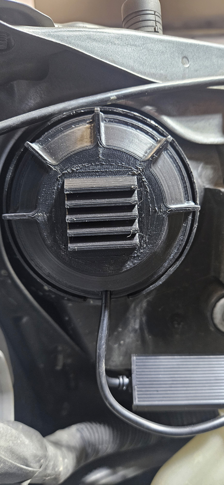
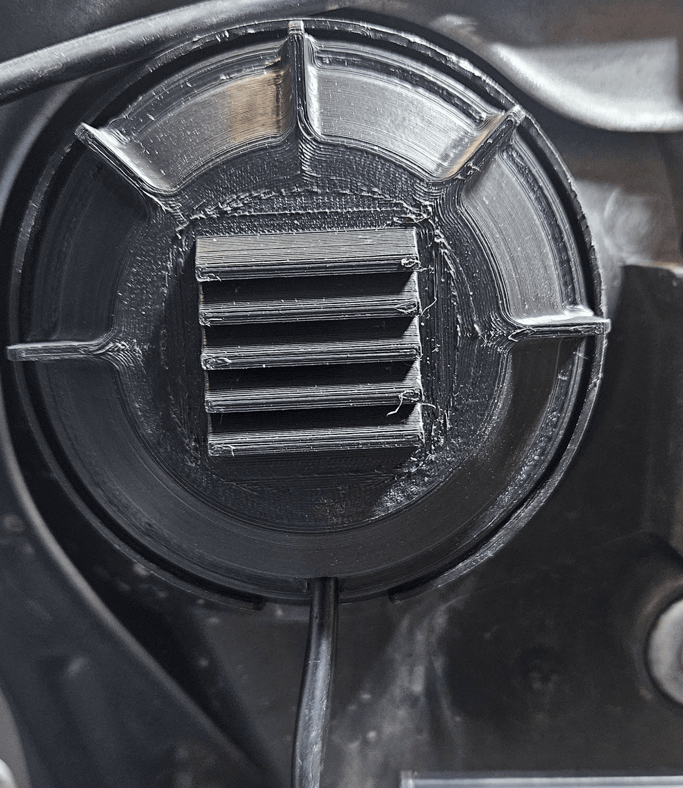
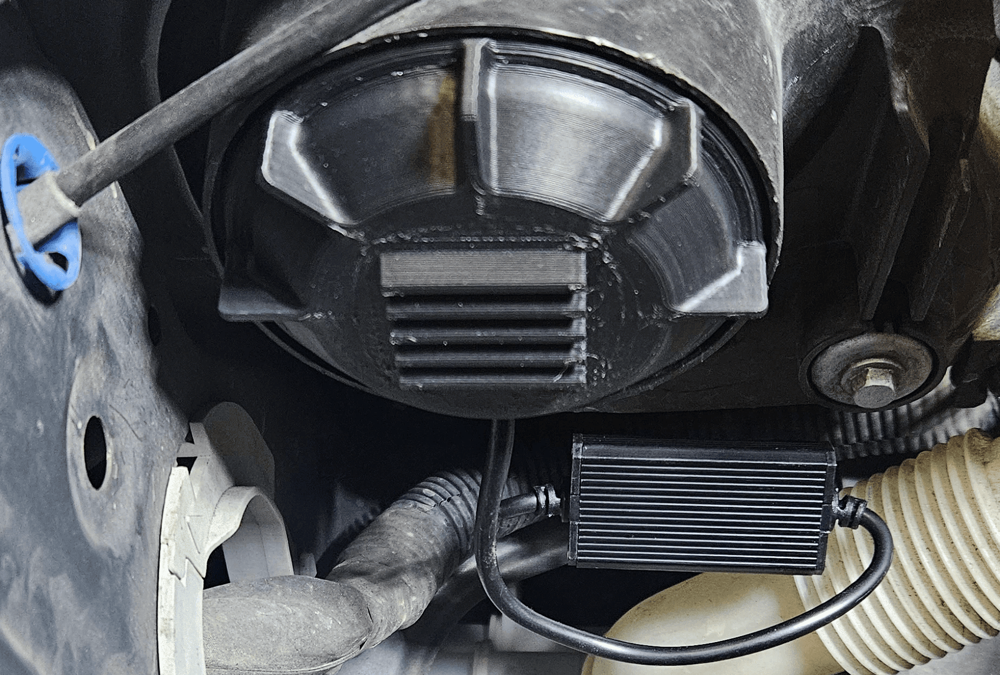
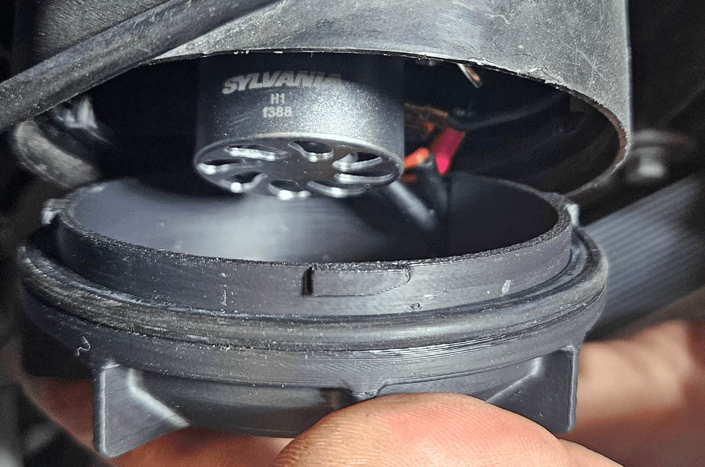

Vented Headlight Bulb Caps
Upgrade your Forester's headlights with extended, vented caps made for LED bulbs.

Product Description:
These custom-designed rear caps for the 2006–2008 Subaru Forester headlight housing allow for easy installation of larger LED bulbs. They feature extended clearance and vented louvers to improve airflow and cooling.
Vehicle Fitment:
2006 - 2008 Subaru Forester (SG w/ Facelift)
Free — Open Source
Released under CC BY-NC-SA 4.0 — build it, remix it, share it with attribution; no commercial use.
Key Features:
Extended Design
Fits larger aftermarket LED bulbs with rear-mounted cooling fans.
Vented Louvers
Improves airflow while reducing the risk of moisture ingress.
External Wire Slot
Route the voltage management box externally with a designated slot.
Durable Material
Printed in ASA for heat resistance, UV protection, and long-term performance.
What You Print:
- 2 ASA-Printed Headlight Rear Caps (the same cap fits both sides)
That's the whole set — just the pair of caps, and the production print project puts both on one plate. The O-rings carry over from your stock caps, and the LED bulbs and their voltage boxes are yours to source.
Installation Instructions:
- Remove the stock headlight caps. For access, you may need to remove the battery (driver's side) and the fender-mounted air intake baffle (passenger's side).
- Carefully remove the O-ring from your original caps.
- Install your LED bulbs according to the manufacturer's directions.
- Route the harness connector through the O-ring.
- Guide the voltage box wire through the slot in the cap, then loop it back through.
- Slip the O-ring over the new SMITHtRONiC vented cap.
- Each cap has three locking tabs—one is larger to ensure correct orientation.
Line up the large tab, then twist the cap to lock it into the headlight housing.
Compatibility Note:
These caps are designed for use with aftermarket LED headlight bulbs. While they offer improved ventilation and clearance, full waterproofing is not guaranteed. Designed to shed water through downward-angled louvers.
Make It Yourself:
- Model — the exact production geometry (Ø84.4 mm cap, extended dome, louvers, locking tabs).
- Print settings — the production Bambu Studio project with both caps on one plate: 0.08 mm layers, ASA, and the painted supports under the louvers already in place.
- Install guide and BOM — the steps below, plus the (very short) parts list: reused stock O-rings and your choice of LED bulbs.
- CAD source — not published yet; the Fusion 360 export is planned to follow.



FAQs:
How do I get a set?
Print one. The model and the production print project are free on GitHub — print the pair yourself or hand the files to someone who prints. Print them in ASA: the caps live over hot LED bulbs in an engine bay, and that's what the production caps were printed in.
Will my LED bulbs fit?
The caps were built around H1-size LED low beams with rear cooling fans and external voltage boxes. The extended dome clears the fans used here, but oversized fan assemblies exist — check your bulb's tail depth before you print. The voltage box rides outside the cap, with its wire through the slot.